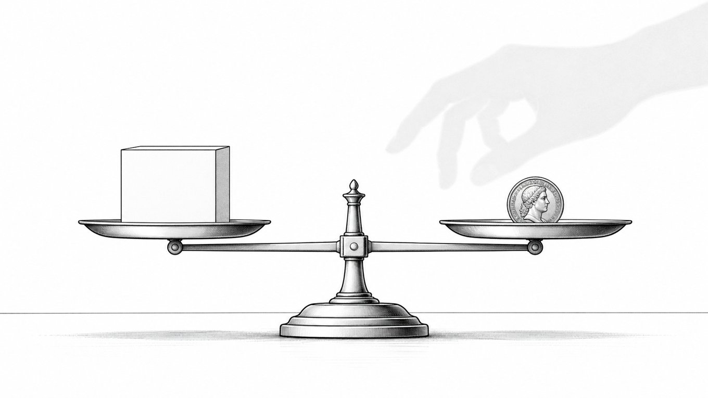

「払った価値がありました！」は、値上げのサインじゃない

どーもとーるです。
起業して少し経ったころ、こういう連絡が届きます。
「先生、本当にありがとうございました。払った以上の価値がありました！」
「高かったですが、それ以上のものを得られました！」
嬉しいですよね。当然です。
で、多くの起業家がこのタイミングでやること。
値上げです。
「これだけ喜んでもらえたなら、もっと高くても売れる」「価格に見合う価値があると証明された」——
でも、ちょっと待ってほしい。
その判断、いくつか見落としがあります。
「払った価値がありました」の意味を読み間違えていませんか
まず、この言葉の正確な意味を確認させてください。
「払った価値がありました」 = 「私が払ったその価格に対して、十分な体験がありました」
これは「あなたの商品がもっと高くても買いたかった」という意味じゃない。
大事なことなのでもう一度言います。
先払いした価格に対する評価です。
顧客はすでに代金を支払っています。その支払いを正当化したい心理——行動経済学で言う「サンクコスト効果」も含めて——「払ってよかった」という評価が生まれやすい。
その声を「値上げのゴーサイン」と読むのは、全然違う話です。
その顧客が今の価格の2倍で買ったか、と言われたら、それは誰にもわかりません。
「買ってたと思います！」と答えてくれるかもしれない。でもその言葉は、サービスの価値を体験した後だから言える言葉です。
体験する前、初めてその高い価格を見た状態で、同じ判断をしたかどうかは、また別の話。「良いものだとわかっているから払える」と「良いものかどうか知らない状態でその金額を出せるか」は、まったく違う問いです。
「妥当でした」は、実は最高評価です
次に、よくある声のパターン。
「商品の内容と価格が妥当でした」
これを聞いたとき、多くの起業家は思います。
「もっと価値を提供できれば、もっと喜んでもらえるかな」「次はもっと盛り込もう」
でも違います。
行動経済学的に見ると、「妥当」という評価はバランスが取れていたというサインです。
過不足なく、ちょうどよかった、という意味。
これは不満じゃない。満足している状態で使う言葉が「妥当」です。
「妥当」と言われたから内容を増やす、価格を上げる——その必要はありません。
むしろ逆で、「このままで大丈夫」という結論を出すのが正解に近い。
顧客は「もっとほしい」とは言っていない。あなたが不安を感じているだけかもしれません。
サービスを盛り込むと何が起きるか
顧客の声に感化されてサービスを増やした場合、現実に起きることがあります。
あなたが疲弊します。
提供量が増えるほど、同じ価格での消耗が濃くなる。結果的に、サービスの質が下がる。
相手が望んでいない価値がつきます。
顧客が「もっとほしい」とは言っていないのに、追加するのはあなたの不安解消のためです。「前の方がシンプルでよかった」という声が出るケースも珍しくない。
満足度が変動します。
内容が変われば、これまで機能していたバランスが崩れます。「なんか変わった」という感覚が、離脱につながることもあります。
良かれと思って盛った結果、喜ばれていたものが喜ばれなくなる——これは笑えない話で、実際によく起きます。
値上げしたいなら、まず「希少価値」から
じゃあ、単価を上げたいときはどうするか。
慣れないうちに商品内容をいじったり価格設定を変えたりするより、「自分の希少価値」を軸にした設計が一番楽です。
「月に受け入れられるのは5名まで」
「残り2名で締め切り」
「人数が増えると精度が下がるから、意図的に絞っています」
この一言で、内容を変えずに単価が上げられます。
なぜかというと、人間は希少なものに価値を感じるから（希少性の原理）。
そしてこれは実際にあなたのキャパシティの話なので、完全に正直な話でもある。
顧客の声に振り回されてサービスをいじり続けるより、「今のままを大切に届ける人数を絞る」の方が、あなたも顧客も長く幸せになれる可能性が高い。
顧客の声の正しい使い方
まとめると、こうです。
「払った価値がありました！」「価格以上でした！」 → このままで正解。今が一番刺さっているサイン。
「妥当でした」 → 悪くはない。でも目指すは「価格以上」。付加価値から上げていく。
「もっとこれが欲しかったです」 → そこで初めて検討する。
顧客の声は宝です。でも、その声の読み方を間違えると、自分を追い詰めるツールになる。
「喜ばれたから変えなきゃ」じゃなくて、「喜ばれたからこのまま届け続ける」——この判断ができる起業家が、長く続きます。
とーる｜行動経済アナリスト